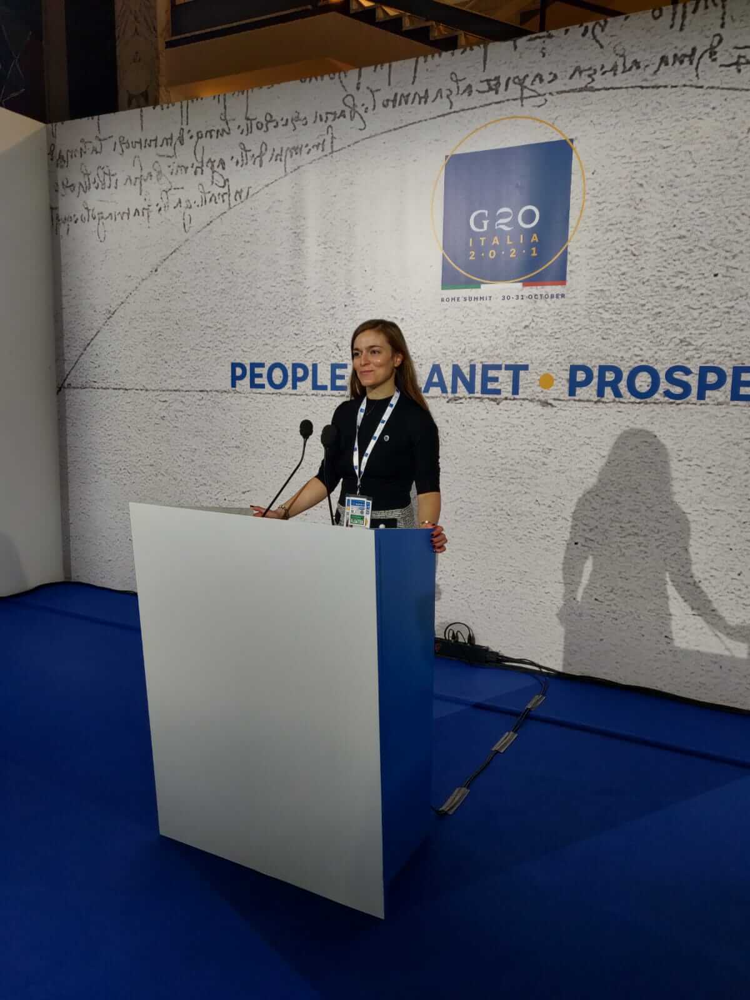

La nostra mentor Alberta Pelino ci racconta, in questa intervista per la rubrica DI CHI SI LU FIJE?, della sua vita da expat a Londra, dell’esperienza da Chair dello Youth20 del G20 e del suo attaccamento per la sua amata città natale, Avezzano. Un mix di grande professionalità, capacità di superare ogni limite ed una gentilezza smisurata.
Alberta raccontaci un po’ di te! Chi sei e di cosa ti occupi?
Sono Alberta Pelino, nata ad Avezzano, ho studiato economia a Roma e poi a Milano e dopo qualche mese a New York mi sono stabilita a Londra per lavoro. Fino a pochi mesi fa ho lavorato in trading di energia, prima in una banca di investimento e poi in una commodities trading house. A 19 anni ho fondato la Young Ambassadors Society, mentre lo scorso anno ho fondato Otto Studio e quest’anno sono Chair dell’engagement group per i giovani del G20 Italia. Amo la boxe, lo yoga e la montagna.
Cosa fa e quali sono gli obiettivi della Young Ambassadors Society?
Ho fondato la Young Ambassadors Society (YAS) dieci anni fa con l'obiettivo principale di dar voce alle idee delle giovani generazioni e di avvicinare i giovani alla politica internazionale e alla diplomazia. Grazie al lavoro svolto abbiamo ottenuto diverse collaborazioni con il Governo e i Ministeri italiani. YAS è l’associazione responsabile dei processi giovanili dei Vertici G7/G20 per l’Italia, sotto gli auspici dell’ufficio Sherpa della Presidenza del Consiglio dei ministri e del Ministero degli Affari Esteri e della Cooperazione Internazionale.
Com’è stata la tua esperienza da presidentessa dello Youth20?
Quest’anno, in quanto Chair dello Youth20 e Presidentessa di YAS, ho avuto la possibilità di partecipare e condividere proposte e raccomandazioni in diversi incontri G20, tra cui il G20 Cultura con il Presidente del Consiglio Mario Draghi, il Ministro Franceschini e i Ministri della Cultura dei Paesi G20, il G20 Salute, le Ministeriali G20 Lavoro, Istruzione e Ambiente e altri G20 working groups. È stata un’esperienza molto bella, frutto di tutto il lavoro fatto con YAS negli scorsi dieci anni. Inoltre, ho avuto modo di confrontarmi con tantissimi giovani, con YAS abbiamo infatti coinvolto nel processo Youth20 più di 100 associazioni giovanili a livello nazionale e internazionale, condividendo idee, entusiasmo e passioni.
Cosa fa e quali sono gli obiettivi di Otto Studio?
Otto Studio è nato dalla mia passione per lo yoga e per il fitness, unita come sempre alla volontà di creare un impatto sociale. Si tratta di una piattaforma di yoga e fitness online con l‘obiettivo di rendere l'allenamento, il fitness e lo yoga accessibile a tutti e di abbattere ogni tipo di stereotipo e ostacolo. Nasce con l’idea di creare uno spazio in cui ognuno si senta libero di allenarsi ed esprimersi. Offriamo corsi online di diverse discipline in un ambiente inclusivo, tenendo conto di possibili differenze culturali e sociali. Un esempio è il corso di "Yoga a Raggi Liberi" che può essere seguito da persone in sedia a rotelle e normodotate e il corso di "Yoga al Buio", seguito da persone vedenti e non vedenti. Otto Studio è un progetto che mira a creare e veicolare valori di inclusione all’interno dello sport, combattendo tutti gli stereotipi che ancora oggi, troppo spesso, sono legati allo sport.
Qual è il ruolo dei giovani oggi in Italia, e quanto, secondo te, una maggior inclusione degli Under35 può contribuire alla crescita del nostro paese?
I giovani hanno dimostrato e stanno dimostrando di saper dare un contributo importante alla società. Un esempio concreto è l’elevata rappresentazione di start up innovative che sono state fondate da giovani under 35 (il 19% del totale - MISE), contribuendo a creare valore e posti di lavoro. I giovani rappresentano un’Italia che guarda avanti con idee e progetti e con un approccio nuovo nei contenuti e nella forma, guardando alle nuove tecnologie e all’integrazione del business con gli aspetti etici e sociali. Sono attenti ai temi ambientali e sociali (in un questionario che abbiamo realizzato lo scorso anno, l’87% su più di 10000 ragazzi/e ha dichiarato che la sostenibilità ambientale e i cambiamenti climatici sono priorità fondamentali che i leader mondiali devono affrontare con urgenza), pertanto la loro inclusione nei processi istituzionali può contribuire a creare un mondo più equo e sostenibile.
Cosa consigli ai giovani per crearsi delle opportunità nel mondo del lavoro?
Purtroppo la pandemia ha avuto un forte impatto negativo sul mondo del lavoro e i giovani sono stati la fascia della popolazione più colpita. Chiaramente ogni situazione è diversa, quindi mi sento più che altro di condividere cosa ha aiutato me a crearmi opportunità lavorative. In primis l’associazionismo e l’attivismo mi hanno permesso sin dai primi anni dell’università di costruirmi un mio network e di imparare competenze che mi sono poi state molto utili per la ricerca di lavoro. Inoltre, ho cercato sempre di partecipare a progetti internazionali che mi aiutassero ad ampliare i miei orizzonti culturali e lavorativi.
Sicuramente anche le competenze digitali possono creare opportunità occupazionali importanti per i giovani, in quanto sono sempre più richieste nel mercato del lavoro.
Ti manca l’Abruzzo?
Sì certamente! Il lockdown mi ha dato la possibilità di spendere nei due anni passati più tempo ad Avezzano con mamma e papà, con mia sorella che vive ora in Norvegia, con la mia gattina Penny e con i miei amici. Mi mancano soprattutto la mia famiglia, ma anche la montagna, il cibo e la natura abruzzesi. Dal prossimo anno ho in piano di trascorrere più tempo in Abruzzo e di provare a sviluppare progetti sul territorio.
Quali sono i lati positivi di vivere all’estero?
La multiculturalità: amo di Londra il fatto che ci siano persone e culture provenienti da tutto il mondo. Considero il confronto tra realtà, paesi e culture diverse una ricchezza che ho sempre cercato di coltivare durante i miei viaggi e vivendo all’estero.
Abruzzo: Mare o montagna?
Montagna! Sono cresciuta tra le montagne ed appena torno a casa ad Avezzano amo andare in montagna con i miei amici. Campo Imperatore è uno dei miei posti preferiti in assoluto, è magico!
Qual è il tuo piatto abruzzese preferito?
Le Crespelle in brodo! Mia mamma le aveva viste fare da una zia di Teramo e da lì è diventato spesso il “piatto della domenica” invernale a casa ad Avezzano, dato che a me, mia sorella e i miei genitori piacciono tantissimo.
Un’ultima domanda permetticela... Di chi si lu fije?
Sono la figlia di Luigi Pelino e Rosalba Ridolfi, entrambi di Avezzano.
